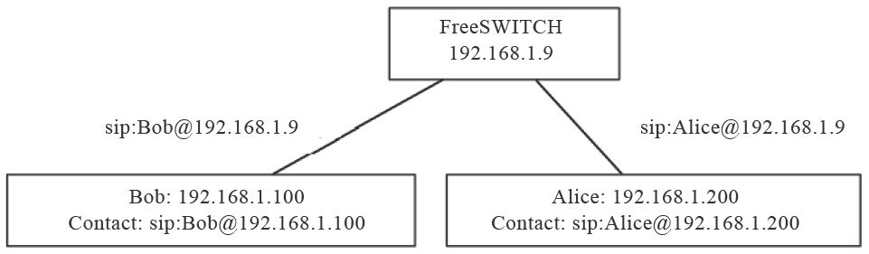
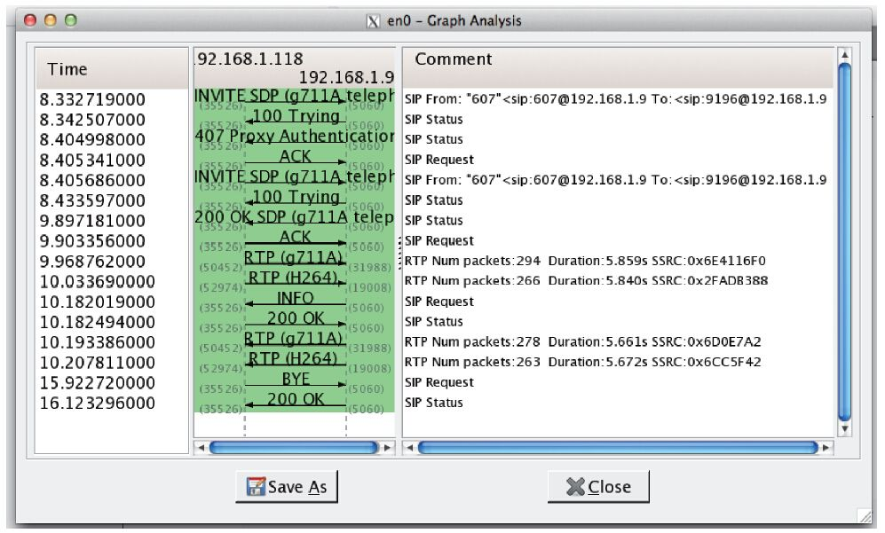
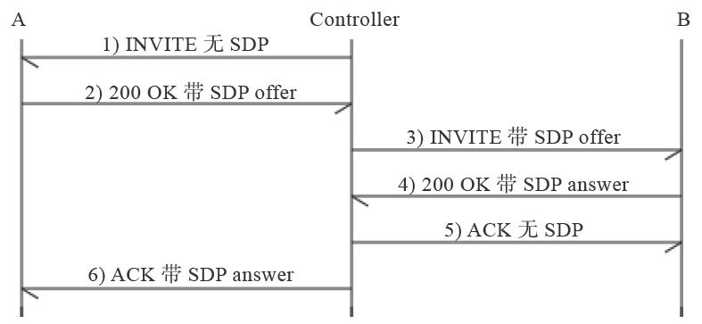

7.4 深入理解SIP
读者只要对照一下上面讲的HTTP协议与SIP协议，就会发现协议文本本身的格式很类似，不同的只是SIP的交互流程更丰富一些。下面我们再来跟大家一起再深学习一些与SIP相关的知识。
7.4.1 SIP URI
上面我们介绍了一些FreeSWITCH的基本概念，并通过一个真正的呼叫流程讲解了SIP。由于实验中所有UA都运行在一台机器上，这可能会引起读者的不解，如果我们有三台机器，其中192.168.1.9是FreeSWITCH服务器，而Bob和Alice分别在另外两台机器上，那么情况可能是图7-9所示的样子。

图7-9 SIP URI
Alice注册到FreeSWITCH，Bob呼叫她时，使用她的服务器地址（因为Bob只知道服务器地址），即sip:Alice@192.168.1.9，FreeSWITCH接到请求后，查找本地数据库，发现Alice的实际地址（Contact地址，又叫联系地址）是sip:Alice@192.168.1.200，便可以建立呼叫。
SIP URI除使用IP地址外，也可以使用域名，如sip:Alice@freeswitch.org.cn。更高级及更复杂的配置可能需要DNS的SRV记录，在此就不做讨论了。
这里再重复一下，Bob呼叫Alice里，Bob是主叫方，他已经知道服务器的地址，因此可以直接给服务器发送INVITE消息，因而它是不需要注册的 [1] 。而Alice不同，它是作为被叫的一方，为了让服务器能找到它，它必须事先通过REGISTER消息注册到服务器上。
7.4.2 SDP和SOA
SIP负责建立和释放会话，一般来说，会话会包含相关的媒体，如视频和音频。媒体数据是由SDP（Session Description Protocol，会放描述协议）描述的。SDP一般不单独使用，它与SIP配合使用时会放到SIP协议的正文（Body）中。
会话建立时，需要媒体协商，双方才能确定对方的媒体能力以交换媒体数据。在第8章我们会专门讲媒体协商，在此我们通过一个简单的例子介绍一下SDP是如何工作的。
这里我们来看一个FreeSWITCH参与的单腿呼叫的例子。客户端607呼叫FreeSWITCH默认的服务echo，它是一个回声服务，呼通后，主叫用户不仅能听到自己的声音，还能看到自己的视频（如果有的话）。在此，为了显示直观一些，我们使用了Wireshark抓包并进行分析，图7-10显示了该SIP呼叫的流程（关于Wireshark的用法我们将在第12章讨论）。

图7-10 带SDP的SIP呼叫
图7-10中，客户端（192.168.1.118）呼叫FreeSWITCH（192.168.1.9），INVITE中带了SDP消息。其认证过程与我们上面讲到的类似。最后，FreeSWITCH回复200 OK对通话应答，然后双方互发RTP媒体流（G711A，即PCMA的音频和H264的视频）。并且，在图中可以看出，客户端的SIP端口号是35526，音频端口号是50452，视频端口号是52974；FreeSWITCH端的端口号则分别是5060、31988和19008。后面我们会在SIP消息中找到这些端口，这里就不再赘述了，大家只要知道用到的是这些端口就可以了。
在本章前面的例子中，为了节省篇幅，我们都省略了SDP部分。下面是一个完整的SIP INVITE消息：
------------------------------------------------------------------------
recv 921 bytes from udp/[192.168.1.118]:35526 at 05:48:25.379261:
------------------------------------------------------------------------
INVITE sip:9196@192.168.1.9 SIP/2.0
Via: SIP/2.0/UDP 192.168.1.118:35526;branch=z9hG4bK-d8754z-0a09c74c6345dc09-1---d8754z-;rport
Max-Forwards: 70
Contact: <sip:607@192.168.1.118:35526>
To: <sip:9196@192.168.1.9>
From: "607"<sip:607@192.168.1.9>;tag=f49f383a
Call-ID: ZTQ0N2Y2NzI2ZjMxZTcwZTY0YTA5ODUyZDUzNWM2YjM
CSeq: 1 INVITE
Allow: INVITE, ACK, CANCEL, OPTIONS, BYE, REFER, NOTIFY, MESSAGE, SUBSCRIBE, INFO
Content-Type: application/sdp
Supported: replaces
User-Agent: Bria 3 release 3.5.0b stamp 69410
Content-Length: 381
v=0
o=- 1371880105304943 1 IN IP4 192.168.1.118
s=Bria 3 release 3.5.0b stamp 69410
c=IN IP4 192.168.1.118
b=AS:2064
t=0 0
m=audio 50452 RTP/AVP 8 0 98 101
a=rtpmap:98 ILBC/8000
a=rtpmap:101 telephone-event/8000
a=fmtp:101 0-15
a=sendrecv
m=video 52974 RTP/AVP 123
b=TIAS:2000000
a=rtpmap:123 H264/90000
a=fmtp:123 profile-level-id=428014;packetization-mode=0
a=rtcp-fb:* nack pli
a=sendrecv
------------------------------------------------------------------------
关于SIP头部，我们前面已经了解得差不多了。其中的Content-Length也跟HTTP协议中的类似，表示正文的长度。读者也能看出正文的类型用Content-Type表示，在这里它是application/sdp，表示正文中是SDP消息。同样，一个空行把SIP头（Header）与SIP正文（Body）部分隔开（SIP头部的结束是以“\r\n\r\n”为标志的）。
下面我们主要讨论SDP部分。
·v= ：Version，表示协议的版本号。
·o= ：Origin，表示源。值域中各项（以空格分隔）的涵义依次是username（用户名）、sess-id（会话ID）、sess-version（会话版本号）、nettype（网络类型）、addrtype（地址类型）、unicast-address（单播地址）。
·s= ：Session Name，表示本SDP所描述的Session的名称。
·c= ：Connecton Data，连接数据。其中值域中以空格分配的两个字段分别是网络类型和网络地址，以后的RTP流就会发到该地址上。注意，在NAT环境中如果我们要解决RTP穿越 [2] 问题就要看这个地址。NAT问题将在第9章节中讲到。
·b= ：Badwidth Type，带宽类型。
·t= ：Timing，起止时间。0表示无限。
·m= ：audio Media Type，媒体类型。audio表示音频，50452表示音频的端口号，跟图7-10中的一致；RTP/AVP是传输协议 [3] ；后面是支持的Codec类型，与RTP流中的Payload Type [4] （载荷类型）相对应，在这里分别是8、0、98和101，8和0分别代表PCMA和PCMU，它们属于静态编码，因而有一一对应的关系，而对于大于95的编码都属于动态编码，需要在后面使用“a=rtpmap”进行说明。
·a= ：Attributes，属性。它用于描述上面音频的属性，如本例中98代表8000Hz的ILBC编码，101代表RFC2833 DTMF事件。a=sendrecv表示该媒体流可用于收和发，其他的还有sendonly（仅收）、recvonly（仅发）和inactive（不收不发）。
·v= ：Video，视频。可以看出它的端口号52974也是跟图7-10中是一致的。而且与H264的视频编码对应的也是一个动态的Payload Type [5] ，在本例中是123。
FreeSWITCH收到上述的请求后，进行编码协商，这里我们省去SIP交互的中间环节，直接看200（应答）消息：
------------------------------------------------------------------------
send 1255 bytes to udp/[192.168.1.118]:35526 at 05:48:26.939191:
------------------------------------------------------------------------
SIP/2.0 200 OK
…
Content-Type: application/sdp
Content-Length: 297
v=0
o=FreeSWITCH 1371848118 1371848119 IN IP4 192.168.1.9
s=FreeSWITCH
c=IN IP4 192.168.1.9
t=0 0
m=audio 31988 RTP/AVP 8 101
a=rtpmap:8 PCMA/8000
a=rtpmap:101 telephone-event/8000
a=fmtp:101 0-16
a=silenceSupp:off - - - -
a=ptime:20
m=video 19008 RTP/AVP 123
a=rtpmap:123 H264/90000
------------------------------------------------------------------------
为节省篇幅，我们省略了一部分SIP头。下面直接看200返回的SDP数据。在这里我们也能找到音、视频的IP地址192.168.1.9以及端口号31988和19008。该SDP也携带了FreeSWITCH协商后的编码PCMA（8）以及“a=ptime”项，其中ptime表示RTP数据的打包时间，其实这里也可以省略，默认是20毫秒。至此，双方都有了对方的RTP地址和端口信息，它们就可以互发RTP流了。
媒体流的协商过程称为SOA [6] （Service Offer and Answer，提议/应答）。通俗地讲，它首先由一方提供支持的Codec类型，由另一方选择。如本例中，607先在INVITE中提议：“我支持PCMA、PCMU和ILBC编码（在m=audio 50452 RTP/AVP 8 0 98 101行中说明），你看咱俩用哪种通信比较好？”，FreeSWITCH在200 OK中回复说：“那我们就用PCMA吧”（m=audio 31988 RTP/AVP 8 101）。具体SOA流程及FreeSWITCH选择Codec的策略和依据我们将在第8章中详细解释。
7.4.3 3PCC
值得一提的是，并不是所有的INVITE请求都是带SDP的，在3PCC中可能没有SDP。
3PCC（Third Party Call Control，第三方电话呼叫控制）指的是由第三方控制者（Controller）在另外两者之间建立的一个会话，由控制者负责会话双方的媒体协商。3PCC是一种非常灵活的会话控制方式。在PSTN网中，第三方呼叫控制通常用于会议、接线业务(接线员创建一个连接另外双方的呼叫)。同样，使用SIP协议也可以借助3PCC来完成PSTN网中的一些相关业务，例如点击拨号、通话过程中放音等等，而且实现起来非常方便。
3PCC的实现关键就在于控制者如何使用SOA在会话双方之间使用SDP消息协商即将建立的会话。RFC3725 [7] 描述了几种实现3PCC的方法，我们在此以第一种为例简单介绍一下。详细了解3PCC已超出本书的范围，在此笔者仅以此为例帮助读者理解不带SDP的INVITE呼叫的交互流程，而对3PCC则避重就轻。一个典型的3PCC呼叫如图7-11所示。

图7-11 一个简单的3PCC呼叫
其中：
1）Controller向A发送一个不带SDP的INVITE请求。
2）A给Controller回送200 OK，其中的offer指的是SDP消息，其中还有描述与A相关的媒体处理能力的数据，详见SDP协议。
3）Controller向B发送INVITE请求，这其中带有A的SDP相关描述。
4）B给Controller回送200 OK应答，其中的answer指的是SDP消息，其中描述与B相关的媒体处理能力的数据。
5）Controller给B回送ACK，不含任何SDP信息，因为在前面的INVITE中已经有了。
6）Controller对A回送ACK，其中带有B的SDP相关信息，这其实就可使媒体流在A和B之间传输了，而不用Controller去转发媒体流。
这就是用一个第三方的Controller进行呼叫控制的例子。FreeSWITCH默认不支持没有SDP的INVITE请求，如果需要响应这种请求，则可以尝试在SIP Profile中开启enable-3pcc参数。
7.4.4 SIP承载
大家已经熟知，HTTP是用TCP承载的，而SIP则支持TCP和UDP承载。事实上，RFC3261规定，任何SIP UA必须同时支持TCP和UDP [8] 。我们常见的SIP都是用UDP承载的，由于UDP是面向无连接的，在大并发量的情况下与TCP相比可以节省TCP由于每个IP包都需要确认带来的额外开销 [9] 。不过，在SIP包比较大的情况下，如果超出了IP层窗口的大小（通常是1500），在经过路由器的时候可能会被拆包，使用UDP承载的SIP消息就可能发生丢失、乱序等，这时候就应该使用TCP。
在需要对SIP加密的情况下，可以使用TLS [10] 。TLS是基于TCP的。
在新的网络时代，又出了一个新的草案，称为SIP over WebSocket [11] 。当前有些浏览器如Chrome和FireFox已经实现了WebSocket，从而可以通过它承载SIP；而它们也实现了WebRTC [12] ，这意味着可以通过浏览器与普通的SIP话机（甚至PSTN）进行音频、视频通话。关于WebRTC的内容我们将在第12章讲解。
[1] 某些服务器在收到呼叫时会检查主叫是否注册，否则不允许继续呼叫，这是策略问题，不是必须的。
[2] 在NAT环境中，处于内部的主机又往往不知道自已在NAT设备中对应的公网地址，因而此处的网络地址就只好填私网的IP地址，而处于公网的主机无法直接访问NAT内部主机的IP地址（私网地址），因而会出现RTP媒体流不通的情况。
[3] RTP/AVP即RTP音频、视频Profile，由RFC 3551定义，参见http://en.wikipedia.org/wiki/RTP_audio_video_profile及http://tools.ietf.org/html/rfc3551。
[4] Payload Type为RTP中承载的媒体数据的类型，简称载荷类型。RFC3551定义了一些常用的音频、视频媒体，如0代表PCMU，8代表PCMA等。
[5] 由于Payload Type123大于95，因而它属于一个动态编码，即实际编码内容与该数字不是一一对应的。实际的映射关系要在后续的“a=rtpmap”行中进行说明。本例中，“a=rtpmap:123 H264/90000”表示它说明了一对Payload Type和实际编码的对应关系，即在这里，123表示H264编码（仅在本次会话中有效）。
[6] 它是在RFC3264中定义的，参见http://tools.ietf.org/html/rfc3264。
[7] http://tools.ietf.org/html/rfc3725。
[8] All SIP elements MUST implement UDP and TCP.SIP elements MAY implement other protocols.
[9] 当然，仁者见仁，智者见智。笔者也听有人说过由于使用了TCP，客户端可以不用总发REGISTER注册消息以用于保持连接或穿越NAT等，反而节省了资源。可惜找不到原文出处了。
[10] http://zh.wikipedia.org/wiki/安全套接层。
[11] http://datatracker.ietf.org/doc/draft-ietf-sipcore-sip-websocket/。
[12] http://www.webrtc.org/http://zh.wikipedia.org/wiki/WebRTC。